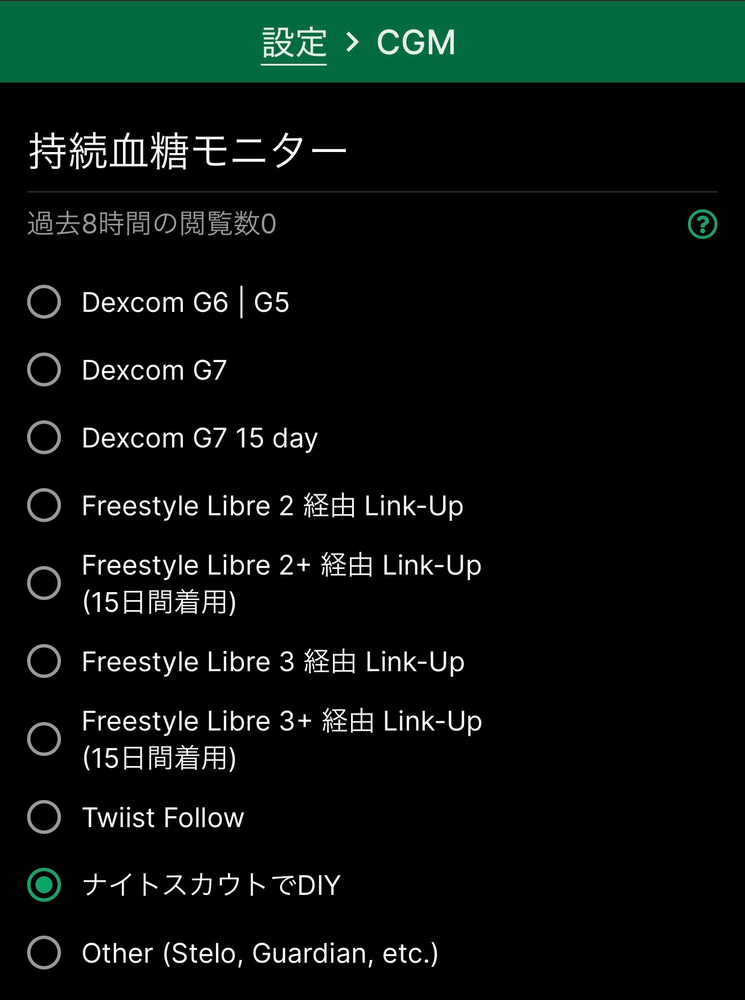

Guardian（MiniMed 780G） · iPhone
Guardian Monitorから
Glurooへつなぐ
Guardian MonitorのNightscout同期先に、Gluroo Global Connectを設定する方法です。kazumaのGuardian（MiniMed 780G）環境で、血糖データがGlurooへ続けて表示されることを実機確認しています。
始める前に：この手順には有料プランが必要です
Guardian Monitorは無料でダウンロードできますが、現在、このガイドで使うNightscout同期を含むフル機能には、アプリ内の有料サブスクリプション（Full Access）が必要です。これはGlucoScopeとは別の料金です。
料金や利用条件は変更される場合があります。設定を始める前に、App StoreのGuardian Monitorページ（外部サイト）とアプリ内の最新表示を確認してください。
このガイドで入力するもの
Glurooに表示されるNightscout URLとAPI Secret Tokenだけです。CareLink、Apple、GoogleなどのログインパスワードをGlucoScopeへ入力することはありません。
Glurooをまだ入れていない方へ
App StoreのGluroo Diabetes Logger（外部サイト）をインストールし、アカウント作成またはサインインを終えて、Glurooのホーム画面まで進めます。途中でCGMの接続情報を求められた時は、その場では入力しません。「これは後で行います」が表示される場合は、それを押してホーム画面へ進みます。ホーム画面が開いたら、下のSTEP 2から続けてください。
-
Guardian Monitorの「Preferences」を開きます
Guardian MonitorをCareLinkへ接続し、アプリ内に現在の血糖値が表示されていることを確認してから、画面下の「Preferences」を押します。表示名や画面の位置は、アプリ更新で変わる場合があります。

赤枠の「Preferences」を押します。公開用画像では血糖などの数値を隠しています。 -
Glurooのメニューから「設定」を開きます
Glurooを開き、左上の三本線を押します。メニューが開いたら、歯車の印がある「設定」を押します。

左上のメニューを開き、赤枠の「設定」を押します。 -
CGMで「ナイトスカウトでDIY」を選びます
設定画面の「CGM」を押し、一覧を下へ進めて「ナイトスカウトでDIY」を選びます。名前にGuardianと書かれた「Other (Stelo, Guardian, etc.)」ではありません。

緑の丸が付いた「ナイトスカウトでDIY」を選びます。公開用画像では上部の個人表示を取り除いています。 -
「グルローグローバルコネクト」を開きます
設定画面へ戻って下へスクロールし、「グルローグローバルコネクト ナイトスカウト」を押します。

赤枠の「グルローグローバルコネクト ナイトスカウト」を押します。 -
上にある「コピー」を押します
Global Connectの画面が開いたら、上にある「コピー」を押します。コピーする形式の一覧が表示されます。

赤枠の「コピー」を押し、次の画面へ進みます。 -
コピー形式の一覧を閉じます
「JSON」「XDrip+」「Nightguard (iOS)」「Notes」の一覧が出ますが、Guardian Monitorではこの一覧を使いません。白い枠の外側を押して、元の画面へ戻ります。

赤枠で示した白い枠の外側を押して閉じます。 -
まず「Nightscout URL」だけをコピーします
「Nightscout URL」の右端にある、重なった四角を押します。まだ「API Secret Token」はコピーしません。iPhoneでは次にコピーした内容へ入れ替わるため、1項目ずつGuardian Monitorへ貼り付けます。
この2つは秘密の接続情報ですスクリーンショット、LINE、メール、SNSへ載せず、ご自身のGuardian MonitorとGlucoScopeへだけ貼り付けてください。

最初に、上側の「Nightscout URL」だけをコピーします。公開用画像では秘密の値を隠しています。 -
Guardian MonitorのURL欄へ貼り付けます
Guardian Monitorへ戻り、Preferencesの「Nightscout」を開きます。「URL」の欄へ、いまコピーしたNightscout URLをそのまま貼り付けます。まだ「Turn on sync」は押しません。

「Nightscout」を押します。画像の料金は撮影時の表示例です。最新の料金と条件はアプリ内で確認してください。 -
Glurooへ戻り、「API Secret Token」をコピーします
GlurooのGlobal Connect画面へ戻り、今度は「API Secret Token」の右端にある、重なった四角を押します。「API Secret Header (SHA1)」は使いません。
次に、下側の「API Secret Token」だけをコピーします。 -
Guardian MonitorのSecret API Key欄へ貼り付けます
Guardian Monitorへ戻り、「Secret API Key」の欄へAPI Secret Tokenをそのまま貼り付けます。URLとSecret API Keyの両方が入ったことを確認してから、「Turn on sync」を押します。

2項目がそろったら「Turn on sync」を押します。公開用画像では氏名を隠しています。 -
バックグラウンド更新をオンにします
Guardian Monitorのオプションでバックグラウンド更新をオンにすると、アプリを前面で開いていない間もGlurooへ更新されやすくなります。通信状況やiPhoneの省電力状態により、反映が遅れることがあります。

使い方に合うバックグラウンド更新を選びます。通信状況などにより更新が遅れる場合があります。 -
Glurooで複数回の更新を確認します
Glurooに現在の血糖値とグラフが表示され、1回だけでなく複数回続けて更新されることを確認します。
すでに別のNightscoutへ送っている場合だけ
Guardian Monitorで設定できるNightscout送信先は1つです。Glurooへ変更すると、元の送信先への新しいデータ送信は止まります。一般的な初回設定では、この補足を意識する必要はありません。